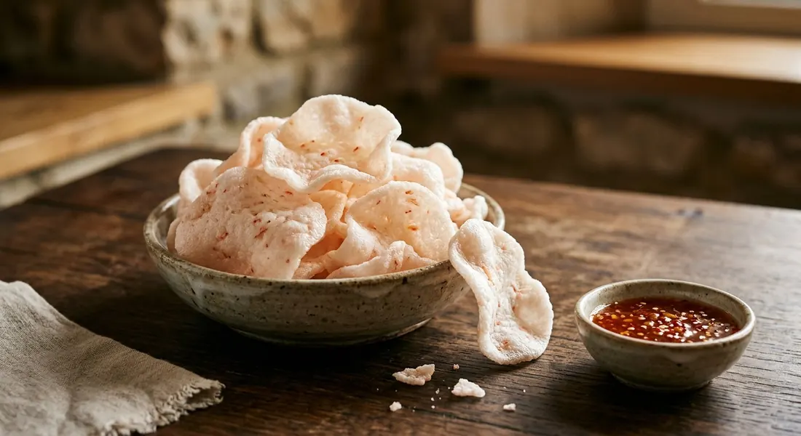

Thai prawn crackers made from scratch — fluffy, crispy shrimp crisps with aromatic prawn flavour, from a homemade tapioca dough that's steamed, dried, and deep-fried.

ข้าวเกรียบกุ้ง
Light, airy prawn crackers made the traditional way — from a spiced shrimp paste and tapioca dough that's steamed, sun-dried, then deep-fried into crispy, puffed crisps with intense prawn flavour.
Making prawn crackers from scratch is a time-honoured process across Southeast Asia. The Thai approach typically uses pure tapioca starch combined with fresh prawns pounded to a paste, creating crackers with clean shrimp flavour and the characteristic light, airy texture that makes them so addictive.
The process spans several days: first making and steaming the prawn dough, then slicing and drying the cooked logs until completely dehydrated, and finally the quick frying that transforms hard discs into puffed, golden crackers in seconds.
| Thai | English | Amount |
|---|---|---|
| กุ้งสด | Fresh prawns, shell-on, use white prawns if available | 400g |
| Thai | English | Amount |
|---|---|---|
| แป้งมัน | Tapioca flour | 450g |
| กระเทียม | Garlic | 8 cloves |
| เกลือ | Salt | 1/2 tbsp |
| พริกไทยขาว | White pepper | 1 tbsp |
| น้ำร้อน | Hot water | 120-140ml |
| Thai | English | Amount |
|---|---|---|
| น้ำมันทอด | Vegetable oil | for deep frying |
Prawn preparation matters. Use the freshest prawns available — white prawns (กุ้งขาว) are preferred for their sweet, clean flavour. Some traditional recipes keep the head fat for extra aroma. Pound or blend to a smooth paste; any chunks will create weak spots in the crackers.
Dough development is key. Thorough kneading develops the protein structure that allows crackers to puff properly. The dough should be stiff but smooth and elastic after 10-15 minutes of work. Too wet and the crackers won't hold their shape; too dry and they won't puff.
Steaming sets the structure. The hour-long steam cooks the starch and sets the prawn proteins, creating the firm texture needed for clean slicing. Cool completely before cutting — warm dough will tear.
Drying is essential. Crackers must be bone-dry before frying or they'll turn chewy instead of crispy. In Thailand's sun, this takes 2-3 days. Modern alternatives include dehydrators or low ovens, though sun-drying gives the best texture.
Frying happens fast. At the right temperature (180°C), crackers puff within seconds. Watch closely — over-fried crackers turn dark and bitter.
Traditional recipes show interesting regional differences. Northern approaches often include rice flour alongside tapioca for a slightly different texture. Southern variants may add curry powder or dried chilli for heat. Modern versions sometimes include baking powder for extra puff, though purists argue this changes the authentic texture.
The prawn-to-flour ratio varies significantly between sources — from economical versions using 300g prawns to 450g flour, to luxury versions with equal weights for maximum seafood flavour.
Flavouring additions range from simple garlic and white pepper to more complex combinations including oyster sauce (for umami depth) or shrimp paste (for extra marine intensity).
Dried, unfried crackers keep for months in airtight containers — perfect for making large batches when prawns are abundant and cheap. Fry only what you'll eat immediately; once fried, crackers go stale within hours.
Serve alongside som tam, larb, or any Thai meal as a crunchy counterpoint to fresh flavours. They're also excellent as a snack with sweet chilli sauce or simply enjoyed plain to appreciate the concentrated prawn taste.
The satisfaction of homemade prawn crackers — from the aromatic prawn paste through the patient drying process to that magical moment when hard discs transform into gossamer crisps — makes this one of Thai cuisine's most rewarding traditional preparations.
This recipe is translated from the following Thai-language sources. Where they disagree, we've said so.
1. Aroifin สอนลูกทำอาหาร — https://aroifin.com/recipes/crispy-prawn-crackers/
2. Krua.co (นภาพร สิมณี) — https://krua.co/cooking_post/shrimpcraker
3. Phil's Home Kitchen — https://philshomekitchen.org/2018/11/01/spiced-prawn-crackers-youtube-clip/
4. True ID Food (แม่ซี น้องมดดี้) — https://food.trueid.net/detail/drOB10Oo054j
5. Whats4Chow — https://whats4chow.com/2014/06/17/homemade-thai-prawn-crackers